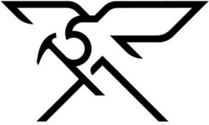

Trade Mark Journal No.2026/003 16 January 2026
WO0000001877320 (6,8,9,11,18,20,21,22,24,25,28,35,41)
Office of origin: France
Date of International Registration:1 April 2025
Date of designation in the UK:
1 April 2025

International priority date claimed: 6 December 2024
(France)
(5103837)
- Class 6
- Common metals, in unwrought or semi-wrought form, and their alloys for the manufacture of hiking and climbing articles; cast or rolled materials for use in the manufacture of hiking and climbing articles, crampons, pitons, stirrups, grappling irons, metal masts, metal stakes, karabiners, metal buckles, fasteners for crampons, ores; metal pulleys [not intended for machines], metal pitons [mountaineering equipment], metal platforms, metal ladders, metal crossbeams, metal shims; climbing crampons and spikes.
- Class 8
- Hand-operated hand tools and instruments for mountaineering and climbing, picks for mountaineering (ice axes), ice axes, picks, snow shovels and for camping; cutlery, forks and spoons; ice knives, hammers, hand drills; scrapers for skis.
- Class 9
- Optical apparatus and instruments, signaling apparatus and instruments for mountaineering and climbing, life-saving apparatus and instruments for mountaineering and climbing; personal protection apparatus against mountaineering and climbing accidents, nets for protection against mountaineering and climbing accidents, safety nets for mountaineering and climbing; clothing and gloves for protection against accidents related to mountaineering and climbing; avalanche sensors, avalanche detection apparatus; avalanche victim detectors, avalanche probes, avalanche airbags, avalanche airbag rucksacks, protective helmets, helmets for mountaineering, climbing helmets, spectacles, sunglasses, mountaineering goggles; portable solar panels for producing electricity, rechargeable electric batteries; ski goggles.
- Class 11
- Electric pocket lamps, electric headlamps, emergency warning lamps for mountain sports (mountaineering) and climbing.
- Class 18
- Skins, trunks and suitcases, umbrellas, parasols and walking sticks, whips, harnesses and saddlery, mountaineering sticks and bags for climbers; sports bags; suitcases; luggage; travel bags; mountaineering sticks; hiking sticks, chalk bags; bags for campers; backpacks; bags for climbers; belt bags.
- Class 20
- Tent pegs not of metal; bedding material (excluding bed linen); mattresses for camping, inflatable mattresses for camping, foam mattresses for camping, sleeping mats for camping (mattresses); camp beds; travel pillows.
- Class 21
- Household or kitchen utensils and receptacles; combs and sponges; brushes (except paintbrushes); brush-making materials; water bottles; refrigerating bottles; insulated bottles, isothermic containers, glasses (containers).
- Class 22
- Ropes, rope ladders, strings, nets, tents, textile awnings, tarpaulins, sails, bags (included in this class), padding materials (animal hair, kapok, feathers, seaweed for fillings), raw fibrous textile materials; cables not of metal; zip ties not of metal.
- Class 24
- Sleeping bags, duvets, sheets for sleeping bags, blankets, travel blankets, bed blankets, down comforters, fabrics, bed linen; covers for sleeping bags; sleeping bag liners.
- Class 25
- Clothing, shoes (except orthopedic shoes), headwear; clothing for mountaineering and climbing, sports shoes, hiking shoes, shoes (except orthopedic shoes) for mountaineering and climbing, boots for mountaineering and climbing, ski boots, cross-country ski boots; climbing shoes, headwear for mountaineering and climbing, trousers for mountaineering and climbing, jackets for mountaineering and climbing, gloves (clothing), mittens (clothing); gloves (clothing) for mountaineering and climbing, hats, caps, scarves, jackets, shirts, fleece pullovers, fleece sweatshirts, vests, t-shirts, shorts, underwear, socks; waterproof clothing, anoraks, parkas, overalls, wind resistant clothing, coats for mountaineering and climbing; gaiters, shoe soles, insoles, shoe soles for mountaineering and climbing; mountaineering boots; belts; waterproof overalls (neoprene overalls), climbing leggings.
- Class 28
- Sports articles for mountaineering and climbing, namely blocking handles, descenders, ropes and safety and retraction fastenings, climbers' rope harnesses, climbers' harnesses, harnesses, girders, climbing grips; chalk for climbers; gloves for sports, gloves for mountaineering and climbing; climbing mattresses; skis, cross-country skis, ski poles, knives for fastening cross-country skis; snowshoes, sole coverings for skis, seal skins [sole coverings for skis], covers specially designed for skis and surfboards, ski bindings.
- Class 35
- Advertising; company management; administrative work; retail services connected with the sale of clothing, clothing accessories, shoes, accessories for shoes, headwear, optical products and accessories, namely, safety glasses for climbing, optical lanterns, binoculars, sunglasses, sports articles and equipment, multifunctional sports bags, sports and fitness articles and equipment, via the Internet, phone, mail and telemarketing;; Retail services, excluding the transport thereof, connected with the sale of a variety of products, namely clothing, clothing accessories, shoes, accessories for shoes, headwear, optical products and accessories namely, safety glasses for climbing, optical lanterns, binoculars, sunglasses, sports articles and equipment, multifunctional sports bags, sports and fitness articles and equipment, enabling customers to conveniently view and purchase those products; presentation of goods on communication media for retail purposes of clothing, clothing accessories, footwear, footwear articles, headgear, optical goods and accessories, sports articles and equipment, multi-functional sports bags, sports and fitness goods and equipment; marketing services; publication of advertising texts; direct mail advertising; publishing posters for advertising purposes; presentation of goods; commercial promotion of products for third parties; commercial information and consumer opinions; administrative processing of orders; promotional services for others by means of customer loyalty programs, customer loyalty services involving or not involving the use of a card; organization of exhibitions and sports articles tests for commercial or advertising purposes; advertising; personnel recruitment.
- Class 41
- Education; training; entertainment; sporting and cultural activities; provision of information with respect to entertainment; provision of information with respect to education; vocational retraining; provision of recreational facilities; publication of books; book lending; provision of non-downloadable films via video-on-demand services; motion picture production; rental of show scenery; photography services; organization of competitions (education or entertainment); organization and conducting of colloquiums; organization and conducting of conferences; organization and conducting of congresses; organization of exhibitions for cultural or educational purposes; booking of seats for shows; game services provided online from a computer network; gambling services; electronic publication of books and journals online; training and teaching in the respective fields of sports and leisure; organizing courses for learning and advanced sports training; organizing sports events and events for sports; organizing sports contests and sports competitions; timing of sports events; entertainment and leisure park services; sports hall services; services of a sports village; sports installations services; rental of sporting equipment; sport club services; sports coaching services; conducting fitness classes; Physical fitness center services; physical fitness courses; booking packages, passes and memberships enabling the practice of all-day sports activities; booking services for day ski packages; editing books, reviews, newspapers, periodicals, magazines on the topic of sports; producing and editing information programs, radio and television entertainment, audiovisual and multimedia programs on the topic of sports; photographic reporting on the topic of sports; radio and television entertainment on the topic of sports.
DECATHLON
Representative: Abion UK Limited, The Forum, St Paul’s, 33 Gutter Lane London EC2V 8AS UNITED KINGDOM